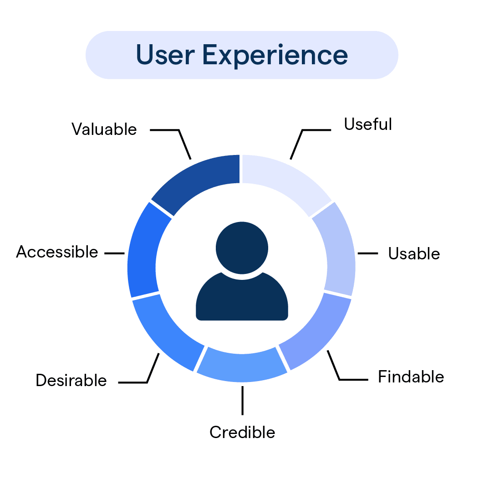

User Experience and Visual Design
Focus on scalability, modularity, and efficient workflows to ensure robust and adaptable digital systems.
Priority:
Create an engaging, inclusive, and accessible user experience.
Why Advocate for This:
Putting the user at the center of the design process ensures that the end product is intuitive, engaging, and enjoyable to use. This involves user research, prototyping, usability testing, and iterative design improvements. Visual aesthetics should align with usability, creating a harmonious balance that attracts and retains users.
Strategies include:
- Accessibility: Adhere to WCAG standards to ensure inclusivity for users with disabilities.
- Intuitive Interfaces: Design simple, predictable user flows with minimal friction.
- Visual Consistency: Use cohesive design systems to build trust and reduce cognitive load.
- Feedback Loops: Incorporate user testing and analytics to refine designs iteratively.